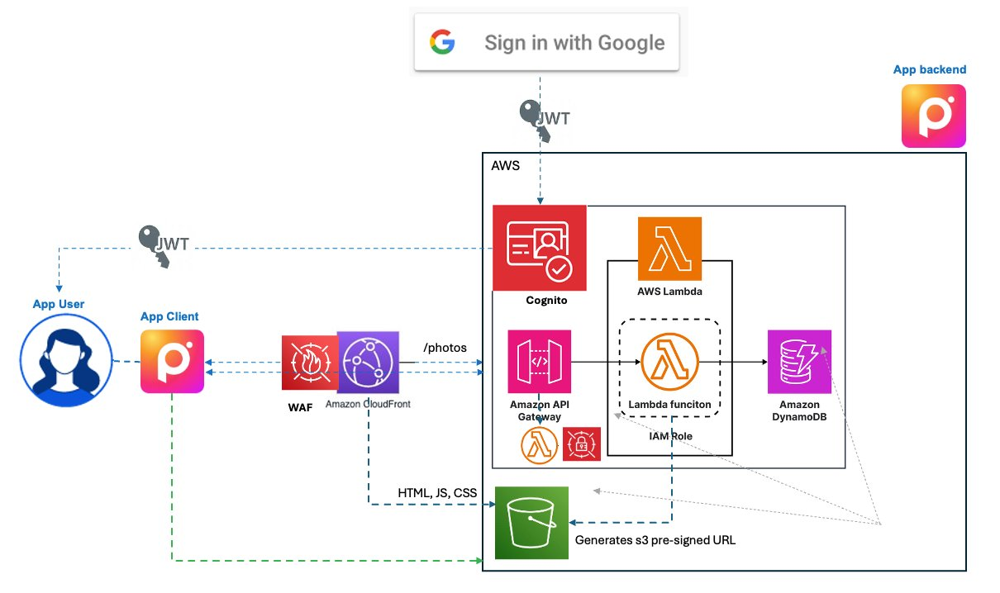

This course builds a Photo Viewer application across 12 weeks, adding one AWS security layer per week. Week 8 adds customer-managed encryption to the data infrastructure built in Weeks 5–7 — you now control not just who can access data, but who can read its contents.
kms:Decrypt events and identify which principal accessed which dataWeek 7 added authorization — Cognito groups drive capability differences, presigned URLs control photo delivery, and ownership checks prevent BOLA/IDOR. Two issues remain.
Week 7 presigned URL conditions enforce Content-Type and file size at the S3 layer — a file claiming to be a 500 MB executable will be rejected. But a file that passes those checks can still be harmful: an image with embedded malware, a JPEG with a PHP payload in its EXIF data, a photo containing PII (someone's driver's license), or inappropriate content. The presigned URL conditions check the envelope, not the contents. This is a detection problem addressed in later weeks.
S3, DynamoDB, and Secrets Manager all encrypt data at rest by default, so the data is protected at the storage layer. By default they use keys AWS owns and manages for you. But in this default mode, decryption is automatic: anyone with data access privileges gets the decrypted content back, with no further check. Encryption is invisible — it isn't a lever you can pull. You can't scope decryption to specific principals, and you can't revoke it, separately from their access privileges. In other words, there is no second, independent mechanism to control who can read the data.
Week 8 switches S3 from its default encryption — SSE-S3, which uses AWS-owned keys — to SSE-KMS. The data and the encryption algorithm don't change; what changes is the key, and therefore who controls (and can audit) the ability to decrypt. SSE-KMS gives you a choice of key — an AWS-managed key or a customer-managed key (CMK) — and we choose the CMK, because it is the only option that lets us write the key policy, scope and revoke decryption per principal, and fully audit usage.
| Method | Key type | Uses KMS? | Control over USE | Control over ADMIN | Decrypts logged in CloudTrail |
|---|---|---|---|---|---|
| SSE-S3 (Default) | AWS-owned | No | None | None | No |
| SSE-KMS (AWS-managed) | AWS-managed | Yes | Via IAM | None | Yes |
| SSE-KMS (CMK) — this week | Customer-managed | Yes | Via key policy + IAM | You | Yes |
Use = who may encrypt/decrypt with the key; Admin = who may rotate, disable, delete, or edit the key's policy.
Within SSE-KMS, here is what the customer-managed key gives us over the AWS-managed key:
| Property | AWS-managed key | Customer-managed key (CMK) |
|---|---|---|
| Who creates the key? | AWS, automatically | You, explicitly |
| Key policy | AWS-controlled — you cannot edit it | You write the key policy — you decide which principals can encrypt, decrypt, and manage the key |
| CloudTrail audit | Decrypts are logged to CloudTrail — but you can't scope or revoke who uses the key via the key policy | Every Encrypt, Decrypt, and GenerateDataKey call logged with principal, key ID, and timestamp |
| Access revocation | Remove IAM permission only | Remove from key policy OR remove IAM permission — two independent gates |
| Disable/delete | Cannot disable or delete | Disable instantly makes all encrypted data unreadable. Delete (after waiting period) is permanent. |
| Cost | Free | $1/month per key + $0.03 per 10,000 API calls |
The diagram shows the Week 8 architecture. One service is new: KMS — S3, DynamoDB, and Secrets Manager now encrypt data using customer-managed keys stored in KMS. Two keys enforce separation of duties: the infrastructure key protects operational secrets, the data key protects user content.

The Photo Viewer has two categories of sensitive data with different access requirements. Using a single key would mean anyone who can decrypt secrets can also decrypt photos — violating the principle of least privilege. Two keys enforce separation of duties.
Protects operational secrets
Key policy grants: Lambda authorizer role (reads origin secret at runtime)
Protects user content
Key policy grants: Lambda execution role (reads/writes photos and metadata at runtime)
The infra-admin (Week 9) can rotate the origin secret but cannot view user photos — they don't have kms:Decrypt on the data key. The photos-admin (Week 9) can manage pre-seeded photos but cannot read the origin secret — they don't have kms:Decrypt on the infra key. Lambda can decrypt photos at runtime but reads secrets only through Secrets Manager's service integration. Three principals, two keys, no one has access to everything.
Click each tab to see the step-by-step flow. KMS is involved in both — but in different ways.
Request goes through CloudFront → API Gateway → Lambda authorizer (checks origin secret by calling Secrets Manager, which decrypts with photoviewer-infra-key).
DynamoDB is encrypted with photoviewer-data-key. When Lambda calls table.scan(), DynamoDB calls kms:Decrypt on the data key internally. Lambda's role is in the key policy, so KMS allows it. The decrypted metadata is returned.
For each photo, Lambda generates a presigned GET URL. When the browser fetches the photo, S3 calls kms:Decrypt on the data key to decrypt the object. The presigned URL carries Lambda's credentials, so KMS checks the Lambda role against the key policy.
Each kms:Decrypt call — from DynamoDB and from S3 — appears as a separate event in CloudTrail with the Lambda role ARN and the key ARN. By default, both S3 (SSE-S3) and DynamoDB (“Owned by Amazon DynamoDB”) used AWS-owned keys — no KMS events at all. Now every decryption is on a key you control. (Secrets Manager was the exception: its default AWS-managed key did log decrypts, but on a key you couldn't scope or revoke.)
How the concepts in this week connect. Click the cards below for details on each.
A Lambda function can have s3:GetObject permission — IAM says yes. But returning the object requires S3 to call kms:Decrypt on the caller's behalf. If the key policy does not allow that Lambda role to use the key, the whole GetObject call fails with AccessDenied — an error, not ciphertext. S3 never hands back raw encrypted bytes; decryption happens server-side as part of the read, so if the caller can't decrypt, nothing leaves the bucket. Two independent authorization layers, evaluated separately, both must pass. This is the same pattern as Week 7 (group check + ownership check) — applied to encryption instead of application logic.
| Layer | Week 7 analogy | Week 8 |
|---|---|---|
| First gate | Group check (RBAC) — is this user premium? | IAM policy — does this role have s3:GetObject? |
| Second gate | Ownership check — does this user own this photo? | KMS key policy — can this role call kms:Decrypt on this key? |
| Both must pass | Premium + owner = allowed | IAM allows + key policy allows = data readable |
This separation means you can answer questions that IAM alone cannot:
kms:Decrypt event, filtered by key IDSymmetric encryption uses one key for both encryption and decryption — like a house key that both locks and unlocks. Fast, efficient, used for bulk data. AES-256 is the standard. KMS uses symmetric keys. S3 server-side encryption uses symmetric keys.
Asymmetric encryption uses a key pair — a public key to encrypt, a private key to decrypt. Anyone can encrypt, only the key holder can decrypt. Slower, used for key exchange and digital signatures. TLS (the "S" in HTTPS) uses asymmetric encryption to establish the connection, then switches to symmetric encryption for the actual data transfer.
| Symmetric | Asymmetric | |
|---|---|---|
| Keys | One shared key | Public + private key pair |
| Speed | Fast | Slow |
| Example | AES-256 (S3 encryption) | RSA, ECDSA (TLS handshake) |
| Use case | Data at rest, bulk data | Key exchange, signatures, TLS |
Data at rest is data stored on disk — S3 objects, DynamoDB records, EBS volumes. Encrypted with symmetric keys (AES-256). Data in motion is data travelling over a network — browser to CloudFront, Lambda to S3. Protected by TLS, which uses asymmetric encryption to establish the session and symmetric encryption for the payload. Both are always encrypted in AWS — the question is who controls the keys.
Server-side encryption comes in three flavors — SSE-S3, SSE-KMS with an AWS-managed key, and SSE-KMS with a customer-managed key (CMK) — compared in the table in Section 2 above. There is also a client-side option (CSE).
SSE-S3 is the default. Every S3 bucket encrypts objects at rest using AWS-owned AES-256 keys (S3-managed, outside KMS). You cannot see, rotate, or revoke these keys. Encryption is transparent — if you can call GetObject, S3 decrypts automatically.
SSE-KMS is what this lab switches to, using a customer-managed key stored in KMS. You write the key policy, you control who can decrypt, and every decryption is logged in CloudTrail. The data and algorithm are identical — what changes is who controls the key.
Client-side encryption (CSE) encrypts data before it reaches AWS. S3 stores an opaque blob it cannot decrypt. Used when you don't trust the cloud provider with plaintext data at all. The Photo Viewer doesn't use CSE — the browser uploads plaintext images, and S3 encrypts on receipt.
Encryption keys need to be stored somewhere more secure than the system that uses them. If a key sits in main memory alongside the application, malware that compromises the OS can steal the key. The solution is an isolated environment dedicated to key storage and cryptographic operations.
On your phone: The password manager stores passwords encrypted with a key that lives inside the Trusted Execution Environment (TEE) — an isolated area of the processor, separate from the main OS. On laptops, this is often a Trusted Platform Module (TPM) — a dedicated chip on the motherboard. The key never leaves the chip; the chip performs encryption and decryption internally.
In the cloud: The equivalent is a Hardware Security Module (HSM) — a dedicated appliance designed for millions of cryptographic operations per second. Same principle as TPM, but at data center scale. AWS KMS is built on top of HSMs — when you create a KMS key, the key material is generated and stored inside an HSM. KMS provides the API; the HSM provides the security boundary.
The progression is: TEE/TPM (single device) → HSM (dedicated appliance) → KMS (managed service wrapping HSMs). Each step increases scale while preserving the core property: the key never leaves the isolated environment in plaintext.
Sending gigabytes of photos to KMS for encryption would be slow and expensive. Instead, KMS uses envelope encryption — like sealing letters in an envelope and then sealing just the envelope.
When S3 encrypts an object with SSE-KMS, it calls kms:GenerateDataKey. KMS returns two things: a plaintext data encryption key (DEK) and an encrypted copy of that DEK. S3 uses the plaintext DEK to encrypt the photo with AES-256, stores the encrypted photo alongside the encrypted DEK, and discards the plaintext DEK from memory.
The key that encrypted the DEK — the one that stays inside KMS — is called the key encryption key (KEK). It never leaves the HSM.
On read, S3 sends the encrypted DEK to KMS (kms:Decrypt), gets back the plaintext DEK, decrypts the photo, and returns it. KMS never sees the photo — it only handles the small DEK.
This is why KMS has a 4 KB limit on direct encryption — it's designed for keys, not data. Envelope encryption means KMS scales to any data size because the actual encryption is done locally by S3 (or DynamoDB, or any service) using the DEK.
Most AWS services (S3, DynamoDB, Lambda) evaluate IAM policies and resource policies together — if either allows the action, access is granted. KMS is different: the key policy is the primary access control. An IAM policy alone cannot grant access to a KMS key unless the key policy explicitly allows it.
In practice, most key policies include a statement that allows the account root to use IAM policies for key management. But for data access (kms:Decrypt, kms:Encrypt), you explicitly name the principals in the key policy. This means removing a role from the key policy revokes access even if the IAM policy still allows it.
With SSE-S3, CloudTrail logs the S3 API calls (GetObject, PutObject) but there are no KMS events at all. With AWS-managed KMS keys, kms:Decrypt is logged — but you can't scope or revoke who uses the key. Only a customer-managed key lets you both audit and control who decrypts.
With customer-managed keys, every kms:Decrypt and kms:GenerateDataKey call appears in CloudTrail with the principal ARN, the key ARN, and the timestamp. You can trace a specific decryption event back to a specific IAM role at a specific time.
This is the audit trail that compliance frameworks (SOC 2, PCI-DSS, HIPAA) require: proof of who accessed sensitive data and when.
KMS is a shared, multi-tenant service. AWS manages the hardware security modules (HSMs) that store your key material. You control the key policy, but AWS controls the HSM infrastructure.
CloudHSM gives you a dedicated, single-tenant HSM in your VPC. You have full control over the key material — AWS cannot access it, even under subpoena. The HSM is FIPS 140-3 Level 3 certified (tamper-evident hardware). Note that AWS KMS HSMs are also FIPS 140-3 Level 3 validated (since 2025), so CloudHSM is no longer required just to reach Level 3 — its real differentiators are single-tenancy and full control of the key material.
| Property | KMS | CloudHSM |
|---|---|---|
| Cost | $1/month per key | ~$1,100/month per HSM |
| Management | Fully managed by AWS | You manage the HSM cluster |
| Key material | AWS-managed HSMs (you can import your own) | You generate and control all key material |
| Compliance | FIPS 140-3 Level 3 | FIPS 140-3 Level 3 |
| Use case | Most applications (now meets Level 3 on its own) | Single-tenant hardware + full key-material control (e.g. specific regulatory mandates) |
For the Photo Viewer — and most applications — KMS is the right choice, and it now meets FIPS 140-3 Level 3 on its own. CloudHSM is for organizations whose requirements mandate single-tenant, dedicated hardware and full control of the key material.
Click to expand.
The problem: Encryption protects data at rest from unauthorized access — it does not inspect data for harmful content. A photo containing embedded malware or PII is now encrypted with a customer-managed key, which makes it harder for unauthorized users to access but does nothing to detect that the content is harmful in the first place.
What needs to happen: Uploaded objects need to be scanned after they land in S3. Macie can detect PII in S3 objects. GuardDuty Malware Protection can scan uploads for known malware signatures. These are detection services that analyze object contents — a different layer from encryption.
The problem: The key policies name specific Lambda execution roles — but there are no human operator roles yet. The infra-admin and photos-admin roles referenced in the key policy design don't exist as real IAM principals. In production, employees need to manage pre-seeded photos, rotate secrets, and inspect encrypted data — each with appropriate key access.
What needs to happen: IAM Identity Center creates employee permission sets that map to IAM roles. Those roles are then added to the appropriate KMS key policies — infra-admin gets the infra key, photos-admin gets the data key. The key policies are already designed for this separation; the principals just need to be created.
All lab files for this week are in the course GitHub repository.